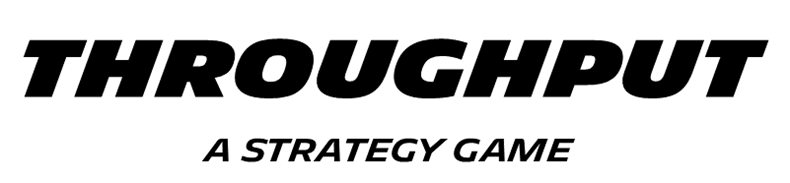
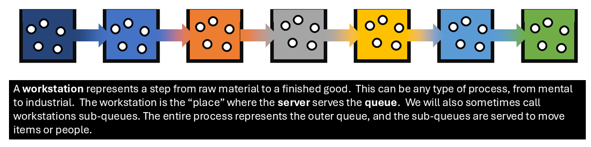
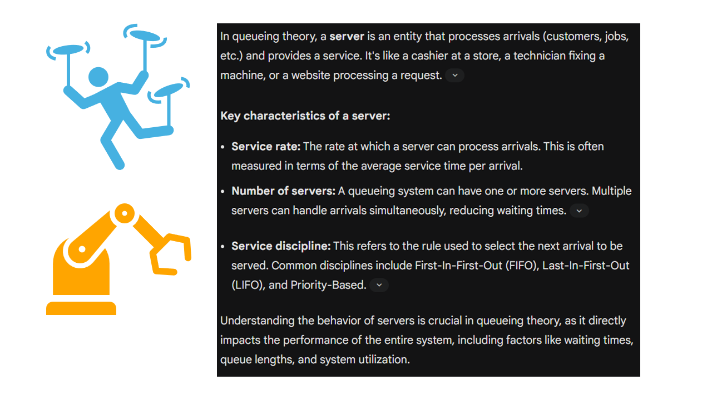

The primary objective of the Throughput game is to move as many work items into the Finished Goods bin as possible while limiting the Work In Progress (WIP). Additionally, the game aims to help players learn how throughput works and why it’s beneficial.
In the Throughput game:


A core part of the Throughput game involves learning how throughput works and understanding its benefits. Teams should continuously strive to maximize the movement of work items into Finished Goods while keeping Work In Progress (WIP) low. The game simulates concepts from the Theory of Constraints (TOC) and Queueing Theory, offering insights into process improvement.
The Throughput game serves as a simulation for the Theory of Constraints (TOC), a management philosophy developed by Dr. Eliyahu Goldratt, which focuses on increasing flow and Throughput by identifying and leveraging the system constraint. The core idea of TOC is "FOCUS!".
Key strategic elements from TOC to apply in the game:
Identify the Constraint (The Drum): Just as a chain is only as strong as its weakest link, your process throughput is only as fast as your slowest production step. The "drum" is the constraint – the resource or station limiting your output. In the game, this will be the station with the lowest throughput capacity, as it sets the pace for the entire operation. Focusing improvement efforts on non-constraints will not improve overall output. The first step in the "Five Focusing Steps" (POOGI) is to identify the system's constraint.
Exploit the Constraint: Once the constraint is identified, the next step is to maximize its utilization and productivity. In the game, this means ensuring the server(s) at your bottleneck station are always working and moving items up to their defined capacity. Instead of immediately adding more capacity, first learn to use the resources you already have more efficiently. Consider strategically applying skills to servers at the constraint or prioritizing work cards for that station.
Subordinate Everything Else (The Rope): Any non-constraint has more capacity than the constraint. It is crucial to avoid producing more than the constraint can handle. This will prevent bloated Work In Progress (WIP) inventory, elongated lead times, and associated issues. The "rope" is how you control the release of new work. In the game, this translates to carefully managing the release of work items from the backlog (using the "team's mood" roll) to the first station, ensuring it does not exceed the pace at which the constraint can consume them. This synchronized approach preserves a harmonious and effective flow inside the system.
Buffer Management: Buffers are strategically positioned reserves of inventory or time that serve to alleviate interruptions from process fluctuations. In the game, the work items waiting in front of each station act as buffers. The most critical buffer to maintain is in front of the constraint. This buffer of work ensures the constraint never runs out of items to process, thus protecting its utilization. Effective buffer management helps absorb variability and maintain a consistent workflow. While the game has multiple workstation "sub-queues", the principle is to use buffers to protect the constraint from starvation and to protect due dates.
Elevate the Constraint: If exploiting the constraint isn't enough to meet objectives, the next step is to expand its capacity. In the game, this can be achieved by:
Continuous Improvement (POOGI): The "Five Focusing Steps" are part of the "Process of On-Going Improvement" (POOGI). The weekly retrospective phase is crucial for this. As you identify and elevate one constraint, another may become the new bottleneck. Continuously monitor your WIP and Finished Goods and discuss what happened to adjust your daily strategy for the next week. This ensures ongoing adaptation to evolving system dynamics.
Queueing Theory analyzes systems involving waiting lines or queues. In the Throughput game, each station acts as a service point with a queue of work items.
Impact of Variability: Even when average capacity exceeds demand, waiting lines (WIP) can form due to natural variation in the system, such as the "lumpiness" of arrival rates or varying server success. The game's die rolls for "mood" and work cards introduce this variability, which buffers help absorb.
Focus on the Bottleneck: Queueing theory reinforces the TOC principle that adding capacity or optimizing non-bottleneck processes will not improve overall throughput if the primary bottleneck remains unaddressed. The only way to increase overall output is by increasing the output of the constraint.
Limiting WIP: Too much WIP is a common issue in many processes. The game's objective to limit WIP directly aligns with this principle, as high WIP can lead to longer cycle times and hide problems.
By applying these strategic principles derived from the Theory of Constraints and insights from Queueing Theory, teams can effectively manage their workflow in the Throughput game to maximize output and minimize costly delays.